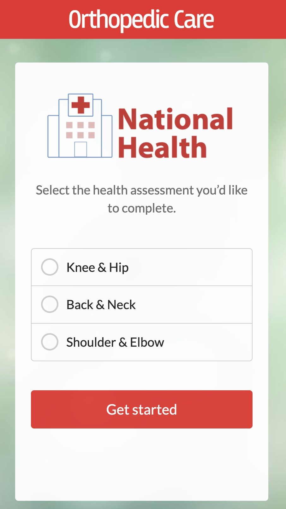
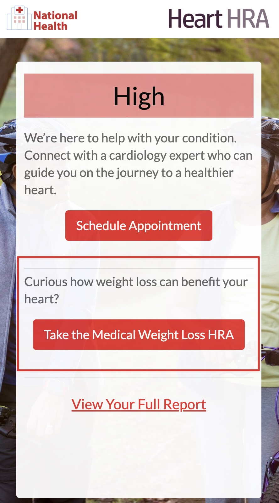
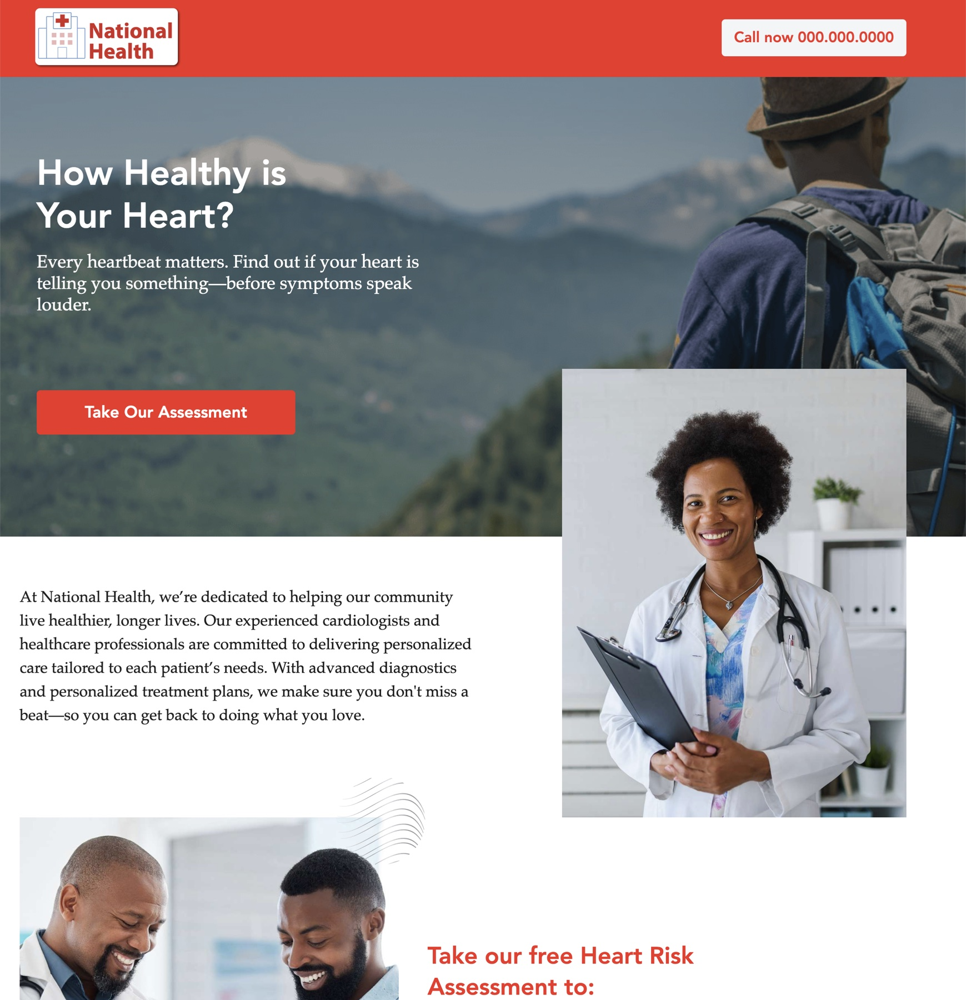
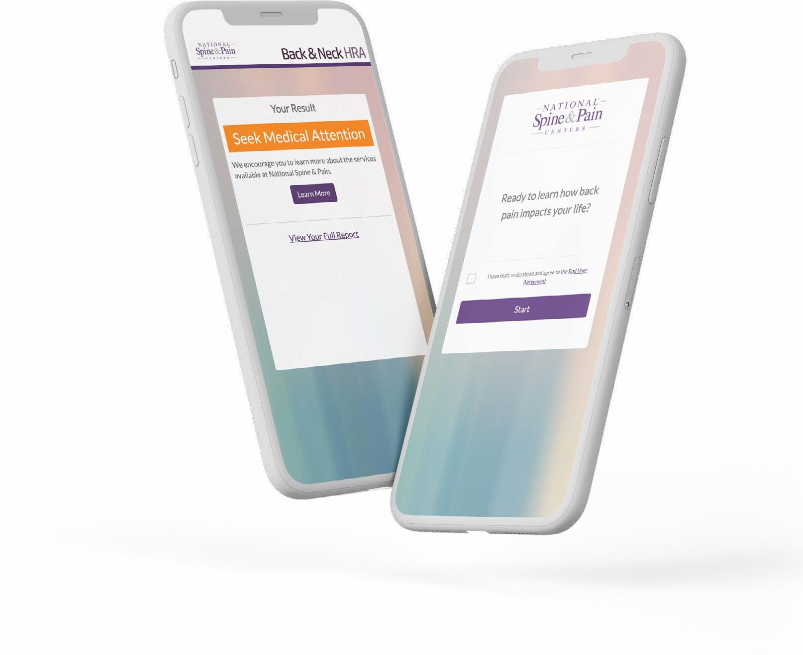
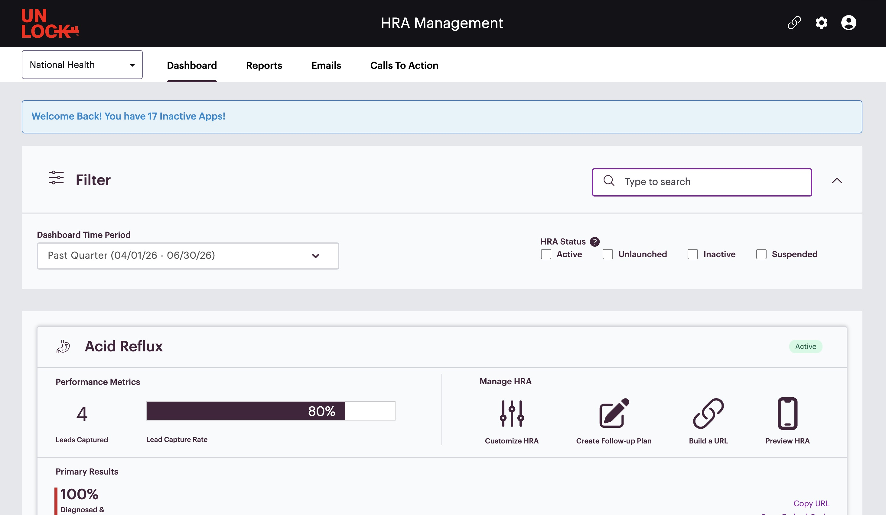
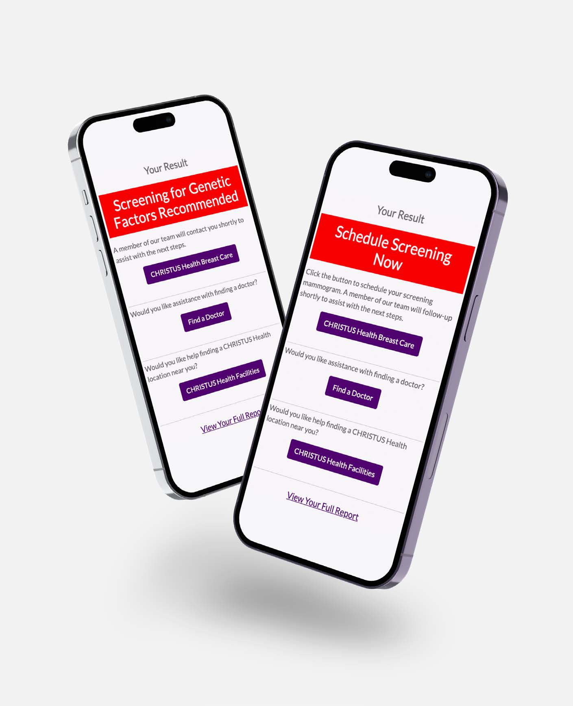

Help someone understand
Short, clinically reviewed questions turn a broad concern into personalized education and context.
A five-minute introduction to Unlock HRAs
An HRA is a clinically grounded, white-label digital experience that helps a consumer understand a health concern, recommends an appropriate action, and gives the health system a way to continue and measure the relationship.


Choose your five-minute path
Best first visit
Learn why the product exists, open one live demo, and see how follow-up and measurement extend the experience.
01 · The essential idea
A consumer may be researching a symptom, wondering about risk, or unsure where to start. Asking for an appointment immediately can be too much. An HRA offers a smaller, useful step.
Short, clinically reviewed questions turn a broad concern into personalized education and context.
Results connect the consumer to an appropriate CTA—care, education, another HRA, or continued support.
Consented data, follow-up capabilities, integrations, and reporting make the HRA part of a managed program.
An HRA is pre-diagnostic. It does not diagnose a condition or replace a clinician’s judgment, and it should not be treated as a quiz that simply ends with a score. See the clinical foundation ↓
02 · Explore the portfolio
The fastest way to understand an HRA is to experience one. Browse by category and open a demo; clinical documentation is available when you need the methodology.
When the starting point is broad
Related HRAs can live behind one service-line entry point, reducing choice overload without forcing someone to understand the organization’s structure first.
Try the orthopedic selection page ↗03 · Build the activation
The strongest HRA programs are omnichannel. Paid media creates demand and captures intent, while owned and integrated marketing place the same useful next step wherever consumers already encounter the brand.
Place them anywhere they add relevance—from a search landing page or social feed to a service-line page, newsletter, office QR code, or broader campaign.
Reach active hand raisers and create awareness with messages designed for different levels of intent.
One clinically grounded experience can support many entry points while keeping the journey measurable.
Give existing audiences and site visitors an engaging next step across digital, content, OOH, and traditional touchpoints.
Paid search · Capture active hand raisers
Search reaches consumers using terms that signal they are primed to learn or act. A targeted landing page provides context and trust before inviting them into the HRA.

04 · See the whole experience
Explore one connected journey. Each stage should feel relevant to the consumer and operationally useful to the healthcare organization.
Reach · Create a relevant door
Paid search, organic search, a health system website, paid social, email, and AI-assisted research can all lead to an HRA. The message and destination should match the consumer’s intent.

Each HRA follows an assessment-specific clinical framework. Depending on the HRA, this may include recognized models such as Framingham or Oxford, validated instruments, guidelines, or other condition-specific sources.
Clinical documentation ↗Brand, imagery, messaging, domain, entry paths, and CTAs can align to the client’s digital experience so the HRA feels like a natural extension of the healthcare organization.
Customization options ↗Custom questions, result pathways, selection pages, and CTAs connect the assessment to real service-line goals, available care, and operational ownership.
CTA strategy guide ↗05 · Continue the relationship
Nurturing allows clients to establish trust, create continued brand touchpoints, and inspire action. They can use follow-up built into the HRA Management Console, connect their existing systems, or combine both approaches.
A focused option for continuing the relationship without requiring a separate client platform for every workflow.
Unlock offers integrations with industry-leading CRMs and marketing automation tools such as Salesforce and Marketo.
The power of integrated systems: HRA engagement can become part of a more centralized consumer strategy—supporting relevant outreach, consistent brand experiences, operational routing, and a clearer connection to downstream outcomes.
06 · Manage, measure, improve
Clients can review activity, manage their HRA program, and make changes to their experiences when desired. Reporting helps teams move from initial engagement through action—and connect HRA activity to downstream encounters and business outcomes when approved data and attribution are available.
Review lead capture, results, status, and program actions in one operational view.

These are representative views—not the full reporting library. Beyond engagement funnels and performance trends, clients can explore additional reporting across the consumer journey.
Proof · CHRISTUS Health
CHRISTUS paired its Breast Cancer HRA with CRM routing, call attribution, patient-engagement support, nurture, and direct outreach.

Proof · National Spine & Pain
National Spine & Pain connected a shortened Back & Neck HRA with SEM and strategic follow-up.
Keep exploring
These are supporting destinations, not required reading. Use the resource that answers the next question in your conversation.
Unlocker access: Need access to the HRA Management Console or supporting resources? The HRA Support team can get you set up and point you to the right materials.
Email HRA Support ↗